Coffret
Kim Jung Gi
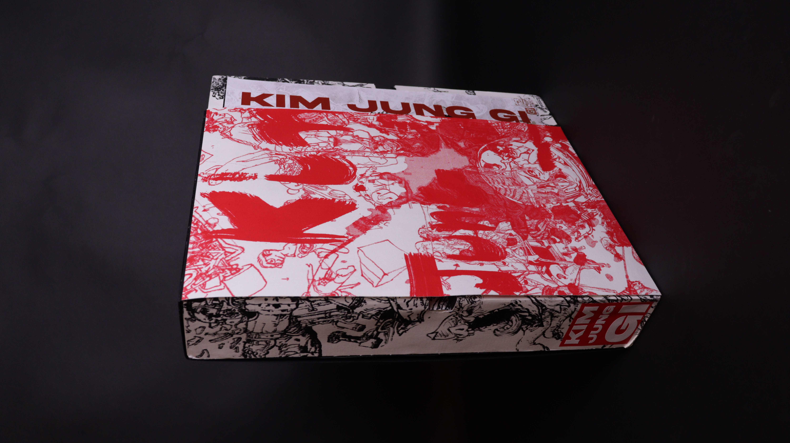
Ce projet est un coffret regroupant des éditions, affiches et stickers mettant en avant le travail de l'illustrateur Kim Jung Gi.
Décédé en 2022, il a marqué le monde de l'illustration par ses fresques impressionnantes et ses performances captivantes.
Le projet se découpe en 3 éditions.
On retrouve d'abord l'édition principale regroupant une grande partie des travaux de l'artiste, avec une première partie pour ceux en noir et blanc et une deuxième partie pour la couleur.
Pour les deux autres éditions, l'une est une biographie de Kim Jung Gi, et la seconde aborde ses collaborations.
Des stickers et posters viennent compléter le coffret
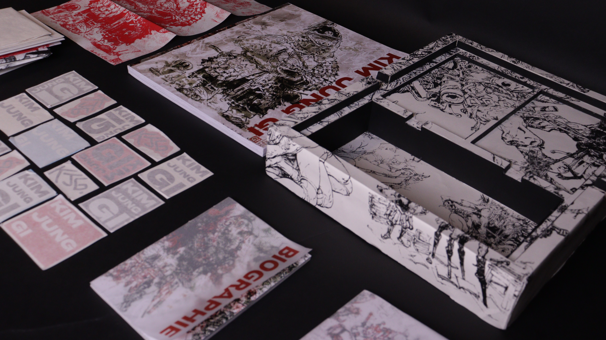
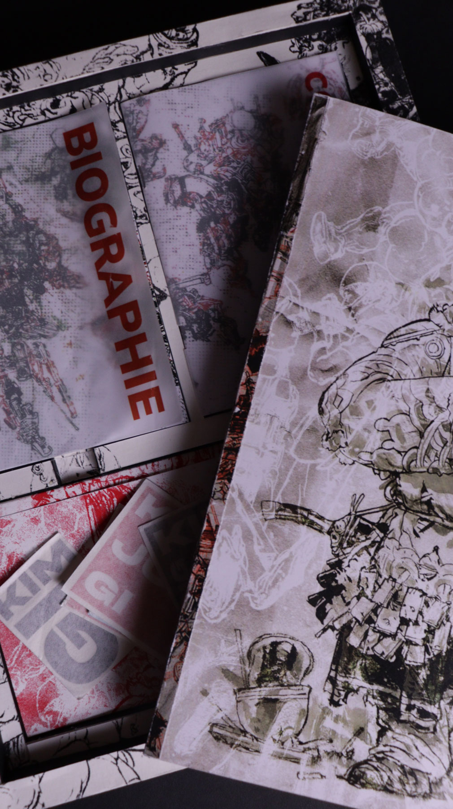
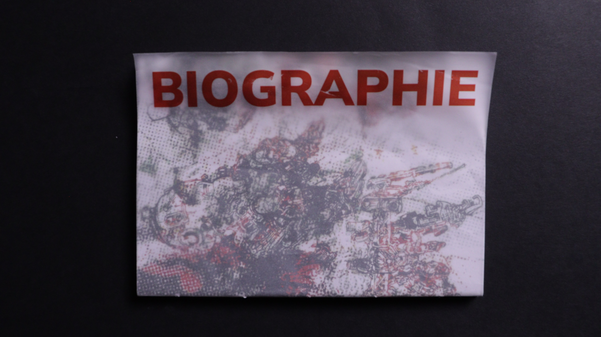
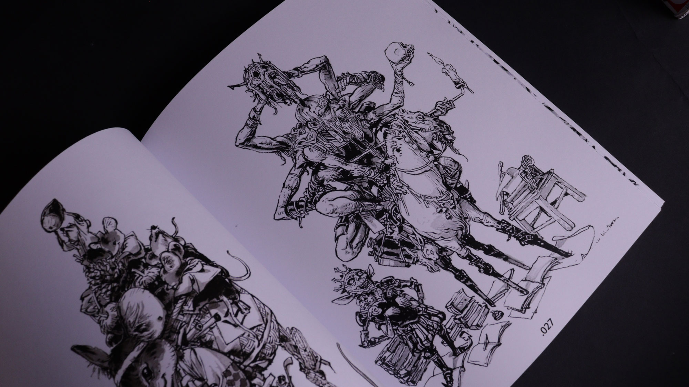
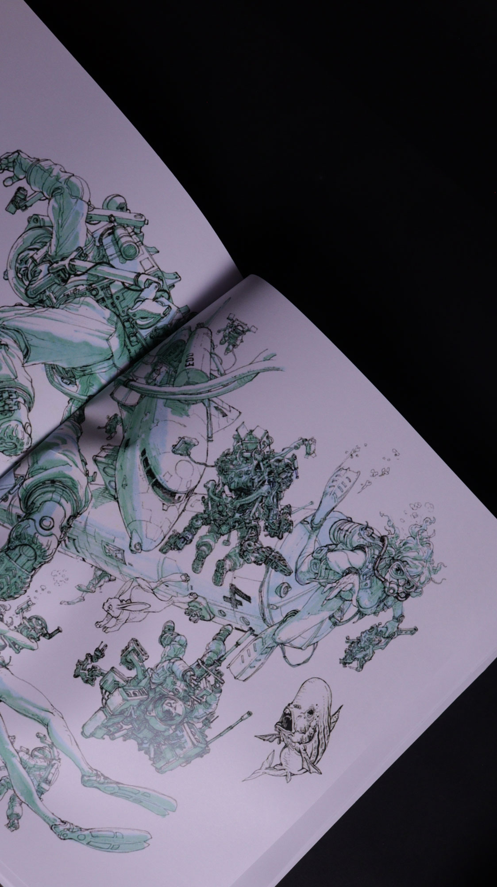
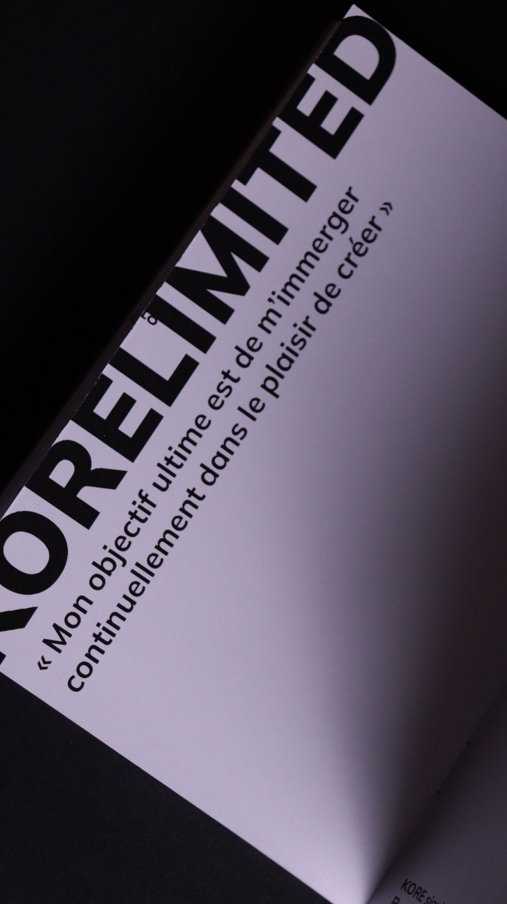
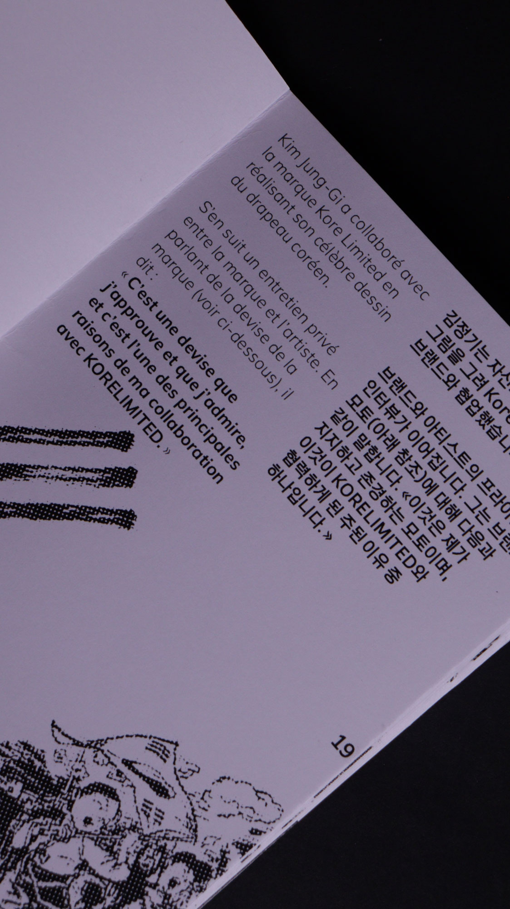
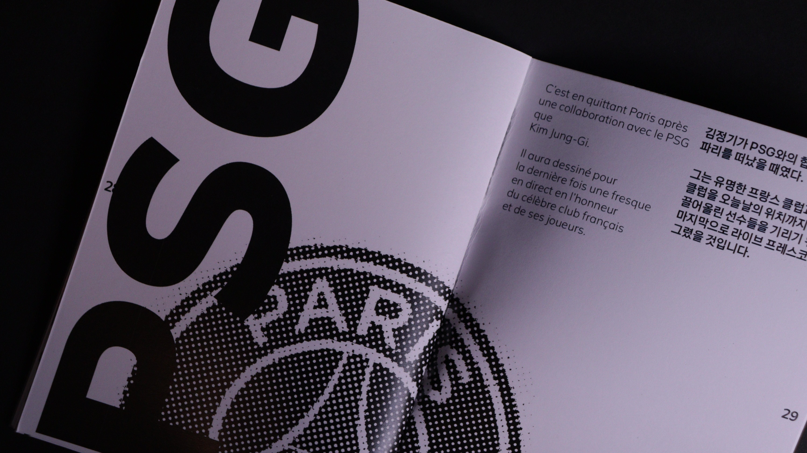
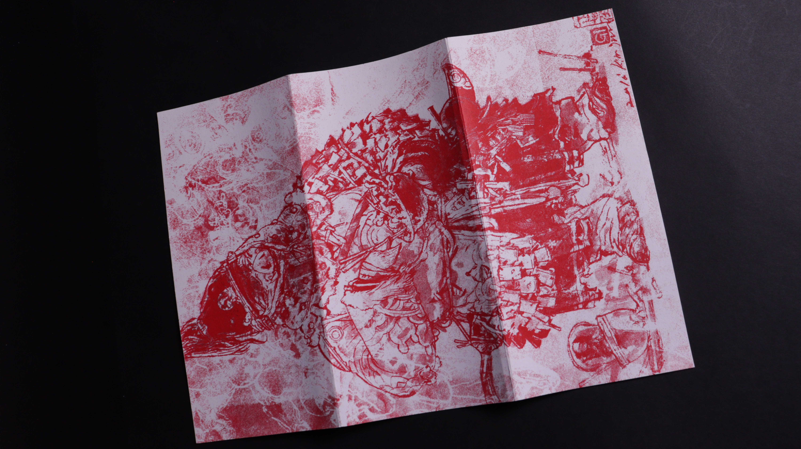
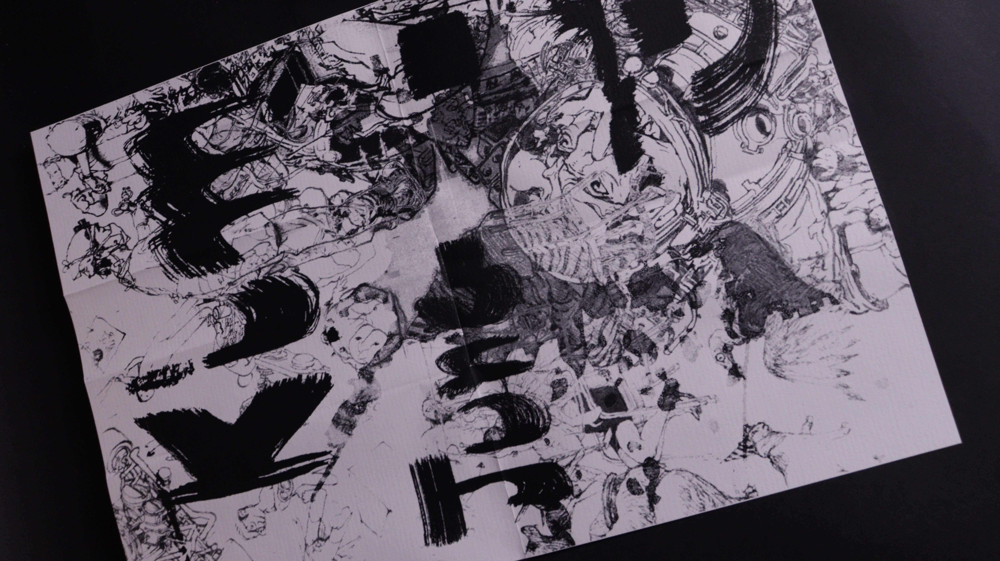
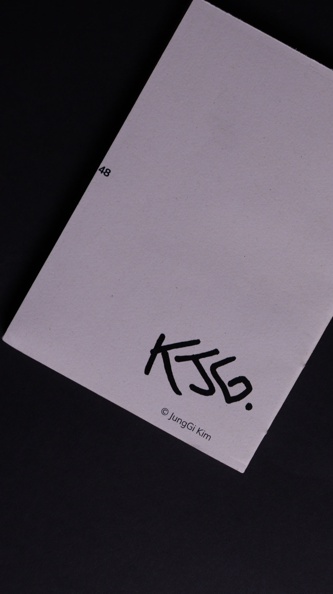
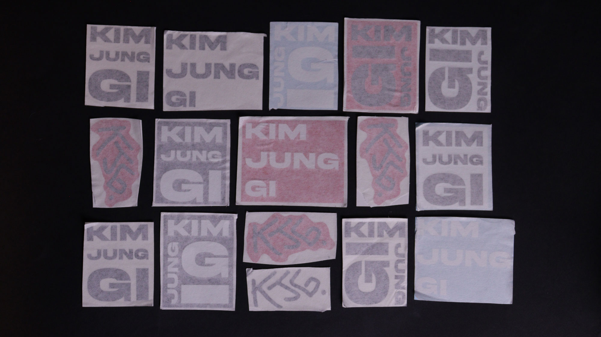